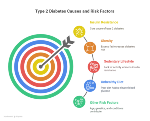
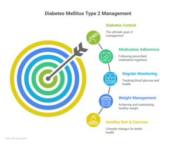

Diabetes Mellitus Type 2, commonly known as type 2 diabetes mellitus or T2 diabetes mellitus, is a chronic metabolic disorder that affects millions worldwide. It is a condition where the body either resists the effects of insulin, a hormone that regulates blood sugar levels, or fails to produce enough insulin to maintain normal glucose levels. Understanding what is type 2 diabetes mellitus is and its impact is crucial for effective management and, ultimately, finding a permanent solution.
What is Type 2 Diabetes Mellitus?
To grasp the meaning of type 2 diabetes mellitus, we need to understand its basic definition. It definition refers to a condition characterized by high blood sugar levels due to insulin resistance or inadequate insulin production. Unlike Type 1 diabetes, which is autoimmune and usually diagnosed in younger individuals, Type 2 diabetes tends to develop over the years, mostly in adults, though increasing numbers of younger people are now affected.
In simple terms, what is type 2 diabetes mellitus? It’s a metabolic disorder where your body’s cells fail to respond properly to insulin, leading to elevated glucose in the bloodstream. This chronic elevation can cause severe complications like heart disease, nerve damage, kidney failure, and vision problems if left unmanaged.
The Rise of Metabolic Surgery
These days, metabolic surgery has emerged and is accepted as a new step in the therapeutic regimen for T2DM when lifestyle modifications and drugs don’t give the required sugar control.
Metabolic surgery involves food re-routing through modifications of the gastrointestinal tract by a laparoscopic or Robotic approach, It is safe and effective for the treatment of diabetes mellitus type 2. Metabolic surgery is being considered as the only permanent solution for diabetes these days.
Not only Diabetes, this surgery has also been seen to reduce other cardiovascular risk factors (cholesterol and blood pressure) when compared with medical treatment.
Understanding the Type 2 DM Meaning and Importance
The term type 2 dm meaning specifically denotes the second form of diabetes mellitus, distinguished by insulin resistance and relative insulin deficiency. Type 2 diabetes mellitus meaning extends beyond just elevated sugar levels—it represents a complex interplay of genetics, lifestyle factors, and environmental influences.
Many wonder, is type 2 diabetes called diabetes mellitus? The answer is yes. “Diabetes mellitus” is a broad category encompassing several types of diabetes, including type 1, type 2, gestational diabetes, and others. When people mention diabetes mellitus type 2 or T2 diabetes mellitus, they specifically refer to the most common form that accounts for approximately 90-95% of all diabetes cases globally.
Causes and Risk Factors
The root cause of type 2 diabetes mellitus is insulin resistance, where muscle, fat, and liver cells do not respond well to insulin. Initially, the pancreas compensates by producing more insulin, but over time, it cannot keep up, leading to elevated blood glucose.

Key risk factors include:
-
Obesity: Excess body fat, especially around the abdomen, significantly increases the risk.
-
Sedentary Lifestyle: Lack of physical activity contributes to insulin resistance.
-
Unhealthy Diet: High intake of refined sugars, processed foods, and unhealthy fats.
-
Age: Risk increases with age, especially after 45.
-
Family History: Genetics plays a role in susceptibility.
-
Ethnicity: Certain ethnic groups have a higher predisposition.
-
Other Conditions: High blood pressure, abnormal cholesterol levels, and polycystic ovary syndrome (PCOS).
Symptoms and Diagnosis
Early symptoms can be subtle, making early diagnosis challenging. Common signs include:
-
Frequent urination
-
Excessive thirst
-
Unexplained weight loss
-
Fatigue and weakness
-
Blurred vision
-
Slow-healing wounds
-
Frequent infections
If you experience any of these, consult a healthcare provider. Diagnosis typically involves blood tests such as fasting plasma glucose, oral glucose tolerance test, and HbA1c levels.
How to Control Diabetes Mellitus Type 2
Managing diabetes mellitus type 2 is multifaceted and involves lifestyle modifications, medications, and monitoring. Here are effective ways to control diabetes mellitus type 2:

1. Healthy Diet
A balanced diet low in refined sugars and saturated fats but rich in fiber, whole grains, vegetables, and lean proteins helps regulate blood sugar. Portion control and regular meal timings are essential.
2. Regular Physical Activity
Exercise improves insulin sensitivity. Aim for at least 150 minutes of moderate-intensity aerobic activity weekly, combined with strength training.
3. Weight Management
Losing even 5-10% of body weight can significantly improve blood sugar control.
4. Medication Adherence
Oral hypoglycemics, insulin, or newer drugs like GLP-1 receptor agonists and SGLT2 inhibitors may be prescribed. Always take medications as directed.
5. Regular Monitoring
Self-monitoring of blood glucose and regular checkups help track disease progression and adjust treatment plans.
How to Treat Type 2 Diabetes Mellitus
The treatment focuses on controlling blood sugar levels to prevent complications. Besides lifestyle changes and medication, some cases may require insulin therapy. Emerging treatments like metabolic surgery have shown remarkable benefits in achieving remission in obese patients.
Gastrointestinal surgery, including procedures that alter the digestive tract, has become a promising option for those struggling with severe obesity and type 2 diabetes. These surgeries help improve insulin sensitivity and promote sustained weight loss.
Is Diabetes Mellitus Type 2 Curable?
A common question is “Is diabetes mellitus type 2 curable?” While traditionally considered a chronic, lifelong condition, recent research suggests that with early intervention and sustained lifestyle changes, remission is possible for many.
What is Remission?
Remission means maintaining normal blood sugar levels without medication for an extended period. This can be achieved through:
-
Significant weight loss via diet or surgery
-
Consistent physical activity
-
Strict dietary control
However, remission does not mean a cure, as the underlying predisposition remains. Continuous monitoring and healthy habits are vital to prevent relapse.
Surgery Options for Non-Obese Patients
Not only in the obese, the need for control of diabetes in non-obese patients led to the development of Ileal Interposition surgery or Duodenojejunal bypass surgery. These can be performed in type 2 diabetics with a BMI as low as 27.5 kg/m2, as well as those who had undergone supervised treatment schedules but still have poorly controlled disease.
However, these surgeries must be performed in specialized centers and in expert hands where these procedures are being performed regularly with long follow-up schedules.
The Permanent Solution – Is It Possible?
The idea of a permanent solution for type 2 diabetes mellitus is no longer just a dream. Advances in understanding the disease and treatment options provide hope.
Lifestyle Modification as the Cornerstone
The most sustainable and effective permanent solution lies in comprehensive lifestyle changes:
-
Adopting a Mediterranean or plant-based diet
-
Maintaining regular physical activity
-
Avoiding smoking and excessive alcohol
-
Managing stress and mental health
Medical Interventions
New pharmacological agents and surgical options complement lifestyle interventions:
-
Bariatric Surgery: Particularly effective in morbidly obese patients, leading to remission in many.
-
Emerging Medications: Drugs targeting different pathways of glucose metabolism offer improved control with fewer side effects.
-
Metabolic surgery and Gastrointestinal surgery, like Ileal Interposition surgery or Duodenojejunal bypass surgery represent cutting-edge options for eligible patients.
Personalized Care
Every individual’s condition varies. A tailored approach combining diet, exercise, medication, and psychological support offers the best chance at long-term control and remission.
Manage Type 2 Diabetes with Dr. Atul Peters
Contact Now!
Book Your Appointment
Conclusion
Understanding what is the meaning of type 2 diabetes mellitus and the ways to manage it is critical in combating this global health issue. While it is a chronic condition, it is controllable, and in many cases, remission or a near-permanent solution is achievable through dedication to lifestyle changes and modern medical care.
If you or a loved one is diagnosed with type 2 dm, remember that proactive management, early diagnosis, and consistent treatment can transform the course of this disease. Consult healthcare professionals for personalized advice and explore all treatment options.
Frequently Asked Questions
1. What is type 2 diabetes mellitus?
It is a chronic condition where the body becomes resistant to insulin or doesn’t produce enough insulin, leading to high blood sugar levels.
2. What is the meaning of type 2 diabetes mellitus?
The meaning of type 2 diabetes mellitus refers to a metabolic disorder characterized by insulin resistance and relative insulin deficiency, causing elevated blood glucose.
3. How to control diabetes mellitus type 2 effectively?
Controlling diabetes mellitus type 2 involves a healthy diet, regular exercise, weight management, medication adherence, and frequent blood sugar monitoring.
4. How to treat type 2 diabetes mellitus?
Treatment for type 2 diabetes includes lifestyle changes, oral medications, insulin therapy in some cases, and newer drugs that improve insulin sensitivity.
6. Is type 2 diabetes called diabetes mellitus?
Yes, type 2 diabetes is a form of diabetes mellitus, which is a broader term for disorders affecting blood sugar regulation.
Recommended Further Reading
Have Personal Health Questions?
Consult with Dr. Atul Peters and our expert multidisciplinary team at Max Smart Super Speciality Hospital, Saket, New Delhi.
Book Your Consultation